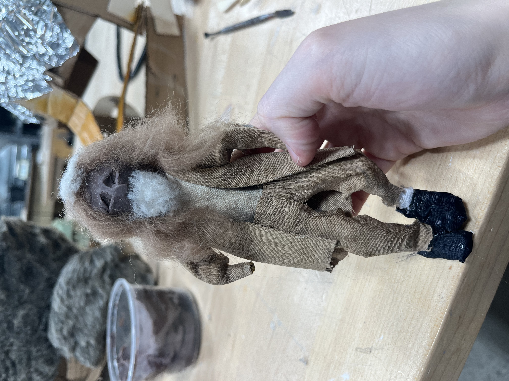
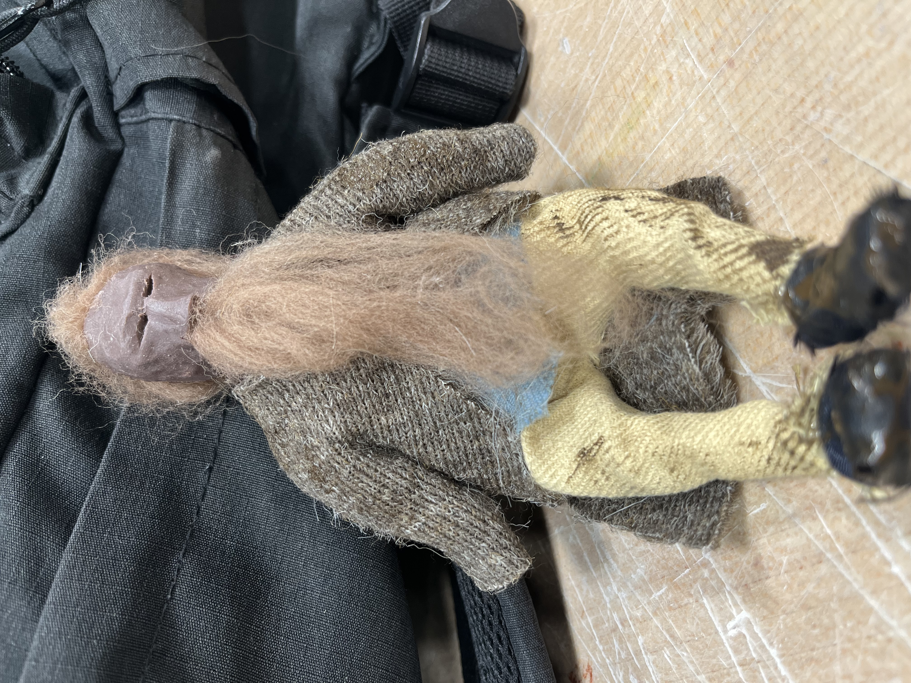
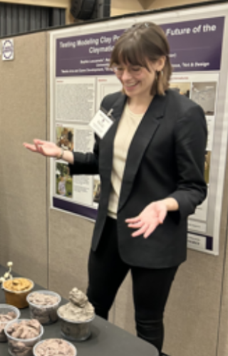

Undergraduate Research
My undergraduate research took place from the summer of 25 to the spring of 26. The goal of my research project was to learn as much as I could about stopmotion animation, specifically about the traditional methods of doing so. Specifically, I was focusing on stopmotion animation techniques using oil-based clay. I would eventually be making my own batches and concocting my own recipe once I obtained enough information about the matter. I began by studying the stopmotion classics such as Wallace and Gromit and Coraline, regardless of whether the stopmotion films themselves actually used oil based clay in the making of their characters. Throughout the course of my research, I made almost 100 different batches of clay. I could not have accomplished everything that I was able to had I not been pushed by my mentor, Teresa Lind, a renowned sculptor.

I built seven different armatures for the stopmotion animation that I ended up creating, all of them using ball-joints to allow natural movement of the body. In addition to the making of the characters for the stopmotion animation, I also made the backgrounds from scratch, learning many different techniques to create various types of miniatures. I eneded up learning wood carving, which ended up being used for almost all of the furniture in the set. The plot for this stopmotion short film was geology and biology based, as my second mentor was a Geology Professor. The storyline was a mockumentary, inspired by Aardman's Creature Creations series, of a various people talking about how dodo birds went extinct, none of them wanting to take accountability for the fact that humans were the ones that caused their extinction.
I presented my undergraduate research at many different events, even going to the state capital at one point to present to the governor. Since conducting my undergraduate research, I have gone out of my way to learn more types of stopmotion animation. Check out my Untitled Visual Novel, a WIP game that utilizes stopmotion techniques.



Check Out More of My Portfolio Projects!!


Unga Bunga Cookunga
Resource Management PC Game
I am the art director and the lead artist for this soon-to-be-released game.
More
Undergraduate Research
Stopmotion Animation Study
Stopmotion classics like Wallace and Gromit were studied thoughly, leading up to the creation of my own oil-based clay recipe and stopmotion utilizing it.
More